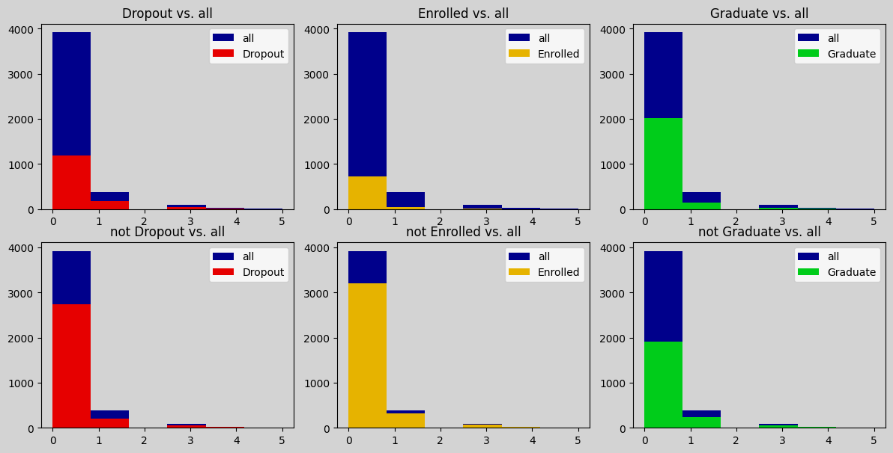
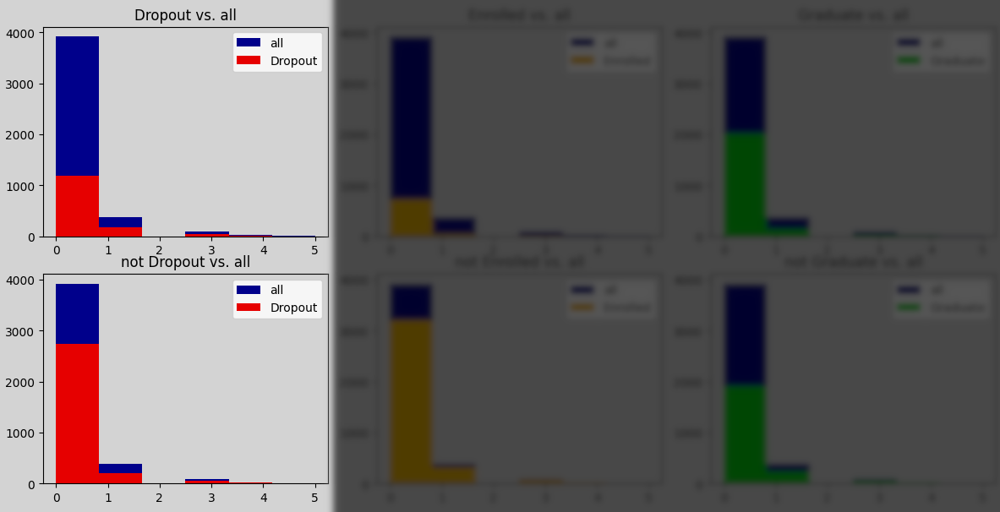
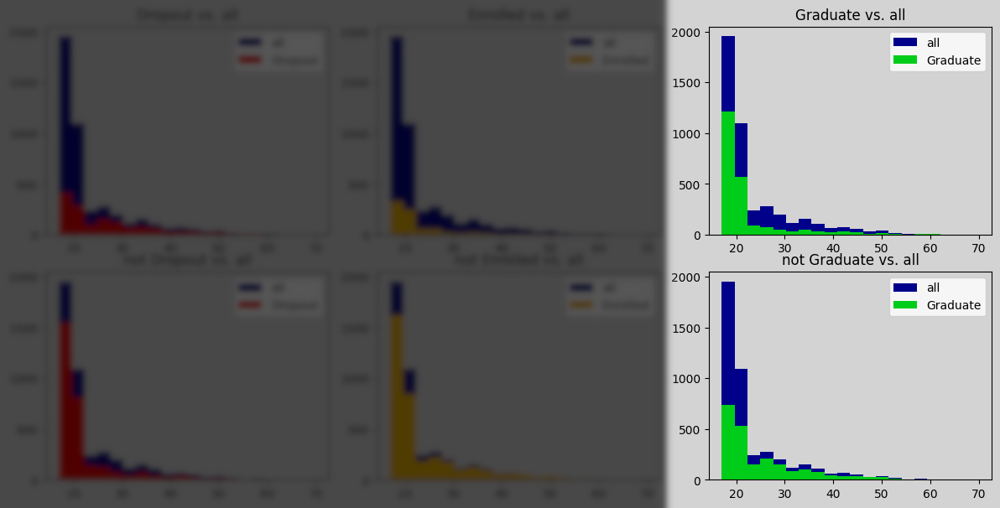
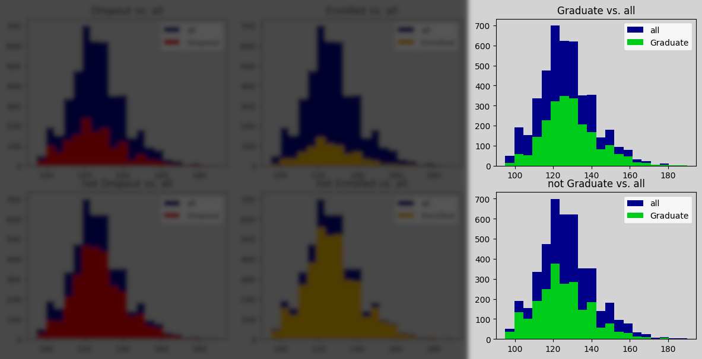
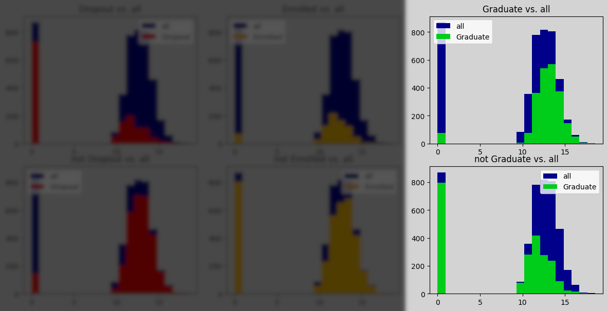
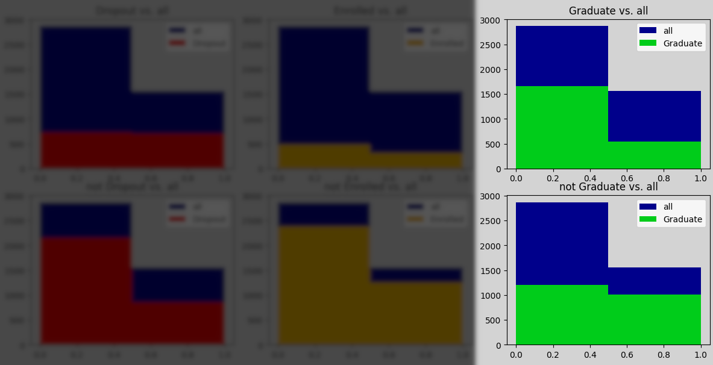
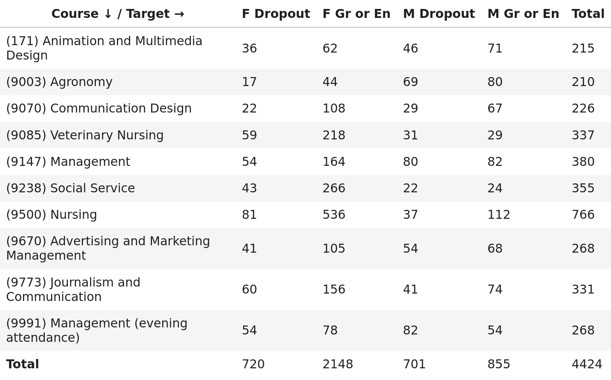

Task: a university wants to provide early support for students at risk of dropping out.
https://attilammagyar.github.io/math-modeling-practice
https://github.com/attilammagyar/math-modeling-practice
NaN's or other problems were found.






